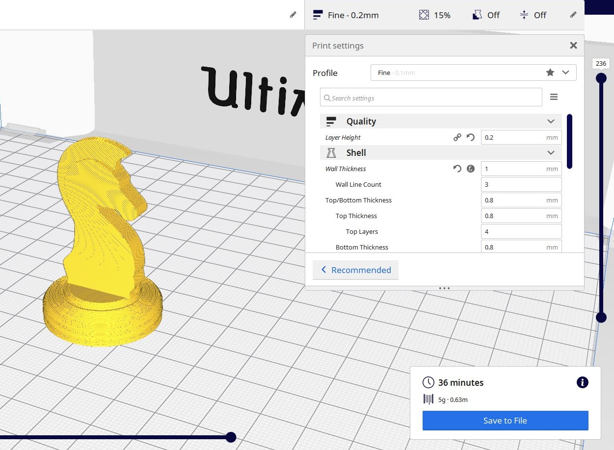

In order to 3D print an object, a slicer software will be required. All 3 printers in the Fablab@SP which are available can use a common slicer, Ultimaker Cura.
- First, we would convert our Fusion file into a STL file. There are 2 methods, Object Browser > Select Object > R-click > Save as STL. You then can leave the options as the default settings and click ok. The 2nd method is Tools > Make > 3D Print. Select the Object, Preview Mesh - Yes, Refinement - Medium, Send to 3d Print Utility - No
- Launch Cura and set the 3D printer to Ultimaker 2. Open the STl file by clicking the folder on the top right hand corner, or dragging the file into the app itself.
- In the right side of the top bar, you can set the print setting. Click custom to have more print options to change. The dimension of the print is shown in the bottom left corner
- The following settings is used: Layer Height - 0.2mm, Wall Thickness - 1mm, Infill - 15%, No supports and bed adhesion. Click slice, and the program will slice the model, showing the approximate timing and mass of material needed to print 
- To shorten the print time, you can reduce the layer height, wall thickness, infill and increase print speed from 50 mm/s.
- You can then save the file as a gcode, or connect it to the 3D printer and print the model.